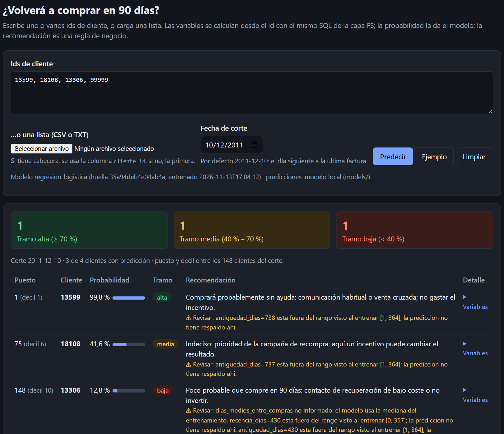
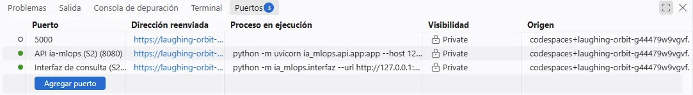
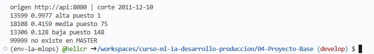

S2 · ML e IA: de desarrollo a producción
La API y la interfaz, paso a paso: de dos procesos en tu portátil a dos contenedores que se hablan, y lo que falta para producción.
Cada orden lleva ⧉ para copiarla en la terminal de tu Codespace, de una en una. ← → avanzan · O índice · F pantalla completa. Las salidas que ves son reales (GitHub Actions y Windows) y las capturas, de un Codespace real del curso (14/11/2026). Todo está explicado en texto en 04-Proyecto-Base/docs/del-ordenador-al-servicio.md.
Lo que nos preguntaron
{"recencia_dias": 35, "frecuencia": 6, "monto_total": 1250.4,
"ticket_medio": 208.4, "unidades_total": 410,
"productos_distintos": 38, "antiguedad_dias": 310,
"frecuencia_90d": 2, "monto_90d": 380.5,
"frecuencia_180d": 4, "dias_medios_entre_compras": 55.0,
"devoluciones": 1, "es_reino_unido": 1}
Trece variables. Nadie de negocio las conoce.
13599, 18108, 13306
…y quiere saber qué hacer con cada uno.
Antes de construir · pros y contras
El otro lado
| Pregunta | Si es «sí»… |
|---|---|
| ¿Lo usarán otras personas o sistemas? | necesita una forma de llamarlo |
| ¿Se decide con él a menudo (cada día, cada semana)? | no puede depender de alguien a mano |
| ¿Los datos cambian y hay que volver a puntuar? | necesita un proceso repetible |
| ¿Hay que poder explicar qué modelo decidió qué? | necesita versiones y trazas |
| ¿Un fallo cuesta dinero o clientes? | necesita vigilancia |
«Producción» no siempre es una API: a veces es un proceso por lotes que deja la lista de la campaña cada lunes (el laboratorio extra, python -m ia_mlops.explotacion).
El mapa
La arquitectura · lo que montamos hoy
Conceptos · 1
Un proceso es un programa en marcha. Un servidor se queda escuchando en un puerto, una «puerta» numerada del equipo: la API en el 8080, la interfaz en el 8090. Dos procesos no comparten puerto: address already in use.
El cliente pide (navegador, curl), el servidor responde. Hablan HTTP con JSON y un código: 200 bien, 422 petición sin sentido, 503 ahora no puedo. La interfaz es servidor para ti y cliente de la API.
Conceptos · 2
Todo lo que el programa necesita y no está en su código: Python 3.11, fastapi y pandas, curso.db, el SQL de FS… y otro servicio, la API. En tu portátil «está ahí» porque lo instalaste tú. Esa es la trampa.
| Variable | Mi ordenador | Contenedor |
|---|---|---|
| CURSO_URL_API | http://127.0.0.1:8080 | http://api:8080 |
| CURSO_DB | data/processed/curso.db | /datos/curso.db |
| CURSO_DB_SOLO_LECTURA | (vacía) | 1 |
El mismo código; cambia solo lo que se le pasa desde fuera.
/salud ¿El proceso responde? Si no, se reinicia. Es lo que pregunta el HEALTHCHECK.
/listo ¿Tiene lo que necesita (la base y la API)? Si no, reiniciar no sirve: el 503 dice qué falta.
Así se ve en tu Codespace · antes de empezar
Captura real Codespace real del curso · rama develop · 14/11/2026
cd 04-Proyecto-Basepython -m ia_mlops.operacionalpython -m ia_mlops.pipelinedocker version --format 'Docker {{.Server.Version}}'Escalón 1 · práctica
python -m uvicorn ia_mlops.api.app:app --host 127.0.0.1 --port 8080python -m ia_mlops.interfaz --url http://127.0.0.1:8080curl http://127.0.0.1:8090/saludcurl http://127.0.0.1:8090/listo{"estado":"listo","datos":"ok","modelo":"http://127.0.0.1:8080"}Así se ve en tu Codespace · escalón 1
Captura real Codespace real del curso · rama develop · 14/11/2026
Uvicorn running on http://127.0.0.1:8080 y la línea JSON modelo_cargado.
Divide el terminal con Ctrl+Shift+5 (o el icono ◫). Sale Interfaz en http://127.0.0.1:8090.
Otra división para los curl: /salud y /listo en 200, y en el centro se ve cada petición.
Escalón 1 · práctica

Casi todos salen ⚠ Revisar: antiguedad_dias=738 fuera de lo visto al entrenar [1, 364]. El modelo se entrenó con cortes de 2010. Así se ve un modelo que nadie vigila (deriva, S5).
Así se ve en tu Codespace · escalón 1
Captura real Codespace real del curso · rama develop · 14/11/2026

Escalón 1 · conclusión
| Depende de… | ¿Qué pasa en otro equipo? |
|---|---|
| Tu entorno conda y sus versiones | Otras versiones, otras probabilidades… o no arranca |
| Tus archivos (models/, curso.db) | Si no ejecutó el pipeline, no existen |
| Tu sistema operativo | Cambian comandos y comillas (PowerShell o bash) |
| Tu sesión abierta | Cierras el portátil y el servicio desaparece |
| 127.0.0.1 | Nadie más puede llamarlo |
Para la API (Ctrl+C en la terminal 1): /salud sigue en 200 y /listo:
{"detalle":"La API del modelo en http://127.0.0.1:8080 no responde (…). ¿Está arrancada y /listo responde?"}Conceptos · 3 · repaso
Plantilla congelada: base, Python, paquetes y código. No cambia.
Una imagen en ejecución. Al borrarlo se pierde lo que escribió dentro.
Lo que se envía a Docker al construir, y lo que no.
Abre una puerta del equipo hacia el contenedor. Sin -p, no se llega.
Monta una carpeta del equipo dentro, en solo lectura. Los datos quedan fuera de la imagen.
Los contenedores de una red se encuentran por su nombre: Docker hace de guía telefónica.
La configuración, desde fuera.
Sin privilegios: si alguien lo ataca, puede hacer menos.
Docker pregunta «¿estás vivo?» y docker ps muestra (healthy).
Escalón 2 · repaso del bloque 4
docker build -f deploy/docker/Dockerfile -t retencion-api:local .Python 3.11, versiones exactas (requirements-api.lock), ia_mlops/ y el modelo.
Datos de clientes, cuadernos, pruebas ni SQL (.dockerignore de la raíz).
Ya no depende de tu conda ni de tu sistema operativo: cualquier equipo con Docker obtiene lo mismo, hasta el último decimal (lo comprobaste con comparar).
Sigue pidiendo 13 variables. Falta la pieza para personas: la interfaz, en su propia imagen.
Escalón 3 · diseño
Si la API buscara las variables por id, curso.db viajaría dentro y cualquiera con la imagen tendría los datos.
Reentrenas el modelo sin tocar la interfaz; cambias la página o los tramos sin reconstruir el modelo.
En producción puede haber diez copias de la API y una sola interfaz.
Escalón 3 · interfaz.Dockerfile
Escalón 3 · práctica
docker build -f deploy/docker/interfaz.Dockerfile -t retencion-interfaz:local .docker image ls 'retencion-*'docker run --rm --entrypoint sh retencion-interfaz:local -c 'find /app -type f -not -path "*/ia_mlops/*"'docker run --rm --entrypoint python retencion-interfaz:local -c "import sklearn"interfaz.Dockerfile.dockerignore: Docker la usa en lugar de la de la raíz. Estrategia: excluir todo (*) y dejar pasar solo lo que se copia (!ia_mlops, !sql/fs/02_poblar_fs.sql…).
La mitad: sin scikit-learn, scipy ni mlflow.
/app/requirements-api.lock /app/requirements-interfaz.txt /app/sql/fs/02_poblar_fs.sql
ModuleNotFoundError: No module named 'sklearn'
Así se ve en tu Codespace · escalón 3
Captura real Codespace real del curso · rama develop · 14/11/2026
Escalón 4 · el servicio
Escalón 4 · práctica
docker network create retenciondocker run -d --name api --network retencion retencion-api:localdocker psdocker run -d --name interfaz --network retencion -p 8090:8090 -v "$PWD/data/processed:/datos:ro" retencion-interfaz:localcurl http://127.0.0.1:8090/listoEspera a que docker ps muestre (healthy) en la API. En PowerShell (Docker Desktop, sin probar): -v "${PWD}\data\processed:/datos:ro".
{"estado":"listo","datos":"ok","modelo":"http://api:8080"}NAMES STATUS PORTS interfaz Up 6 seconds (healthy) 0.0.0.0:8090->8090/tcp api Up 6 seconds (healthy) 8080/tcp
Fíjate en los puertos: la interfaz tiene 0.0.0.0:8090->8090 (publicado); la API solo 8080/tcp: escucha en su red, sin puerta al equipo.
Así se ve en tu Codespace · escalón 4
Captura real Codespace real del curso · rama develop · 14/11/2026
Son los identificadores de lo que se acaba de crear: la red y los dos contenedores.
La interfaz, 0.0.0.0:8090->8090/tcp: publicada. La API, solo 8080/tcp: sin puerta al equipo.
"modelo":"http://api:8080": la interfaz llegó a la API por su nombre, dentro de la red.
Escalón 4 · comprobación
curl -X POST http://127.0.0.1:8090/recomendar -H "Content-Type: application/json" -d '{"cliente_ids": [13599, 18108, 13306, 99999]}'origen http://api:8080 | corte 2011-12-10 13599 0.9977 alta puesto 1 18108 0.4159 media puesto 75 13306 0.128 baja puesto 148 99999 no existe en MASTER
| Cliente | Escalón 1 (Windows) | Escalón 4 (contenedores) |
|---|---|---|
| 13599 | 0,9977 · alta | 0,9977 · alta |
| 18108 | 0,4159 · media | 0,4159 · media |
| 13306 | 0,128 · baja | 0,128 · baja |
El modelo y los datos son los mismos: solo cambió dónde corren.
Así se ve en tu Codespace · escalón 4
Captura real Codespace real del curso · rama develop · 14/11/2026

Escalón 4 · el error más frecuente
docker run -d --name interfaz-mal --network retencion -p 8091:8090 -e CURSO_URL_API=http://127.0.0.1:8080 -v "$PWD/data/processed:/datos:ro" retencion-interfaz:localcurl http://127.0.0.1:8091/listodocker rm -f interfaz-mal{"detalle":"La API del modelo en http://127.0.0.1:8080 no responde ([Errno 111] Connection refused). ¿Está arrancada y /listo responde?"}Así se ve en tu Codespace · escalón 4
Captura real Codespace real del curso · rama develop · 14/11/2026
Escalón 4 · laboratorio
Así se ve en tu Codespace · escalón 4
Captura real Codespace real del curso · rama develop · 14/11/2026
Con la API parada, en el Codespace sale [Errno -2] Name or service not known; en GitHub Actions salió [Errno -3] Temporary failure in name resolution. Dicen lo mismo: el nombre «api» ya no existe en la red.
Escalón 5 · un archivo
docker rm -f api interfaz; docker network rm retenciondocker compose -f deploy/docker/compose.yaml up --build -ddocker compose -f deploy/docker/compose.yaml psdocker compose -f deploy/docker/compose.yaml logs -f interfazdocker compose -f deploy/docker/compose.yaml downSERVICE STATUS PORTS api Up 11 seconds (healthy) 8080/tcp interfaz Up 5 seconds (healthy) 0.0.0.0:8090->8090/tcp
La interfaz arrancó 6 s después: Compose esperó a que la API estuviera sana (depends_on: service_healthy).
| A mano | En compose.yaml |
|---|---|
| docker network create retencion | automática: retencion_default (proyecto + _default) |
| --name api | services: api: |
| docker build -f … | build: {context, dockerfile} |
| -p 8090:8090 | ports: ["8090:8090"] |
| -v …/data/processed:/datos:ro | volumes: ["../../data/processed:/datos:ro"] |
| -e CURSO_URL_API=… | environment: |
| mirar docker ps hasta (healthy) | depends_on: condition: service_healthy |
Compose sirve para un equipo. Para muchos, lo hacen plataformas como Cloud Run o Kubernetes (S3 y S4).
Así se ve en tu Codespace · escalón 5
Captura real Codespace real del curso · rama develop · 14/11/2026
Escalón 6 · honestidad
| Aspecto | En el Codespace (hoy) | En producción | En el curso |
|---|---|---|---|
| Dónde corre | una máquina tuya que se apaga | plataforma gestionada que lo mantiene y reinicia | S3 · Cloud Run |
| Quién llega | solo tú (puerto privado) | usuarios autenticados; la API solo desde servicios autorizados | S3 · IAM |
| Imágenes | construidas a mano | construidas en el CI, versionadas en un registro | S3–S4 · Artifact Registry |
| Datos | SQLite montado como volumen | almacén gestionado, con permisos y copias | S3 · BigQuery |
| Secretos | no hay | en un gestor de secretos, nunca en la imagen | S3 · Secret Manager |
| Despliegue | docker compose up | automático, con pruebas y aprobación | S4 · CI/CD |
| Vigilancia | docker logs | registros, métricas y alertas | S3 y S5 |
| Calidad del modelo | el aviso «revisar» | deriva, reentrenamiento y vuelta atrás | S5 |
Escalón 6 · el mapa a producción
Resumen
| Qué corre | Depende de | Quién llega | Datos | |
|---|---|---|---|---|
| 1 · Mi ordenador | dos procesos Python | tu conda, tus archivos, tu sesión | solo tú (127.0.0.1) | tu carpeta, con escritura |
| 2 · API en imagen | un contenedor | solo la imagen | tú, por -p 8080 | no usa |
| 3–4 · Dos contenedores | dos contenedores en una red | solo las imágenes | tú, solo a la interfaz | volumen :ro |
| 5 · Compose | lo mismo, en un archivo | el archivo y las imágenes | igual | igual |
| 6 · Producción | las mismas imágenes | la plataforma | usuarios autenticados | almacén gestionado |
Comprueba que lo tienes
Dentro de un contenedor, 127.0.0.1 es él mismo. En la red, Docker resuelve api al contenedor de la API.
Nadie de fuera necesita hablarle: solo la interfaz, dentro de la red. Exponer lo mínimo.
La imagen se copia y se comparte: no debe llevar datos de clientes. Con :ro, no se pueden estropear.
/salud 200 y /listo 503. Si el HEALTHCHECK mirara /listo, Docker reiniciaría la interfaz sin arreglar nada.
Nada. Cambian la configuración y dónde corren las piezas.
Cuando es un análisis puntual o un prototipo que nadie más usará ni repetirá.
Cierre
Probado con Docker real en GitHub Actions y recorrido entero en un Codespace del curso (14/11/2026). Si algo te sale distinto, anótalo.